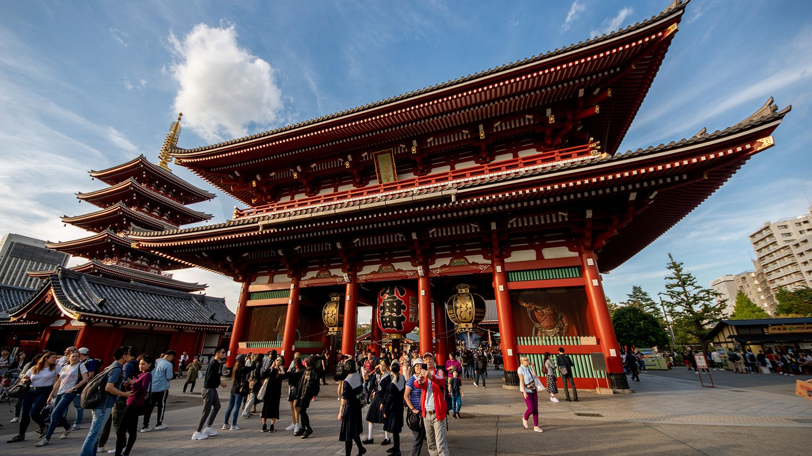
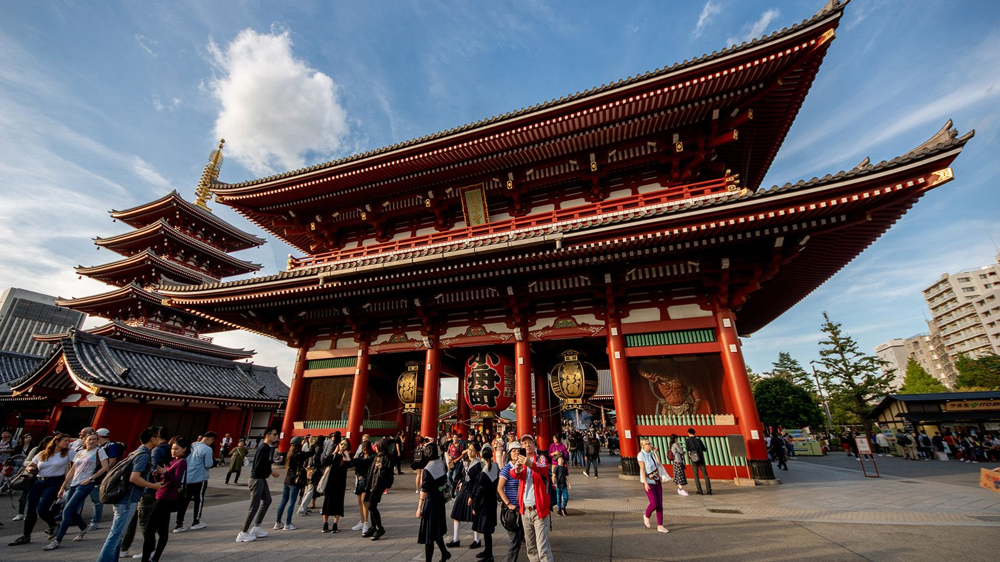

The Ainu
The Ainu are believed to be descendants of an indigenous population that once
spread across northern Asia, and they are considered to be the earliest settlers of
Hokkaido, Japan's northern island.


 
